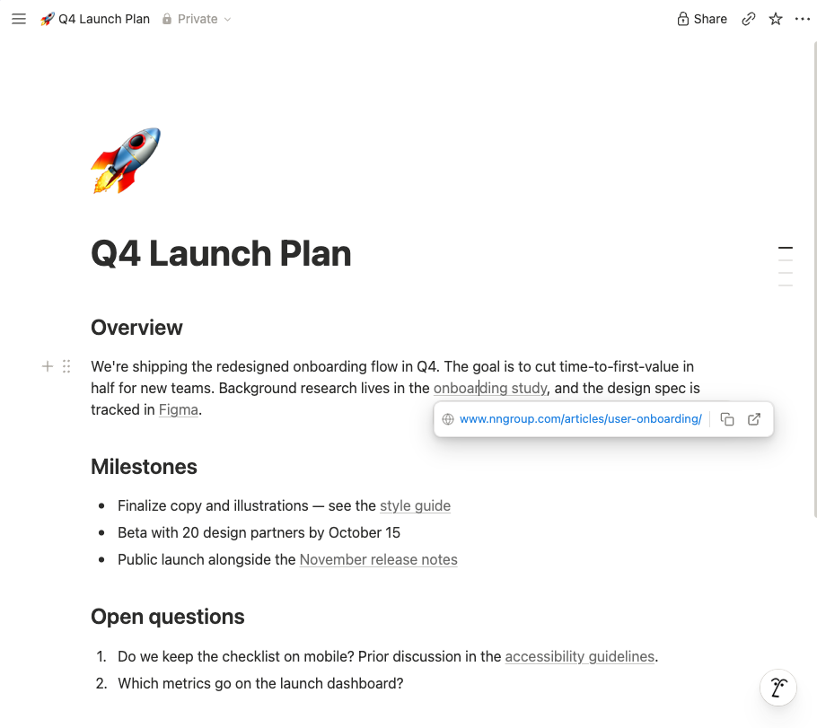

Clicking a link in Notion shows the URL with copy and open buttons instead of whisking you away. Just like Google Docs.

Place your cursor, select text, and click around links without accidentally opening tabs.
⌘/Ctrl-click, Shift-click, and middle-click open links right away.
The sidebar, breadcrumbs, and search results still go where you click.
Drag to select text that includes a link without triggering anything.
A stray click on a person mention no longer pops open their profile.
The popover matches Notion's theme automatically.
No data collected, no network requests, no extra permissions. Open source.
Click a link, get a copy/open popover instead of leaving the page.